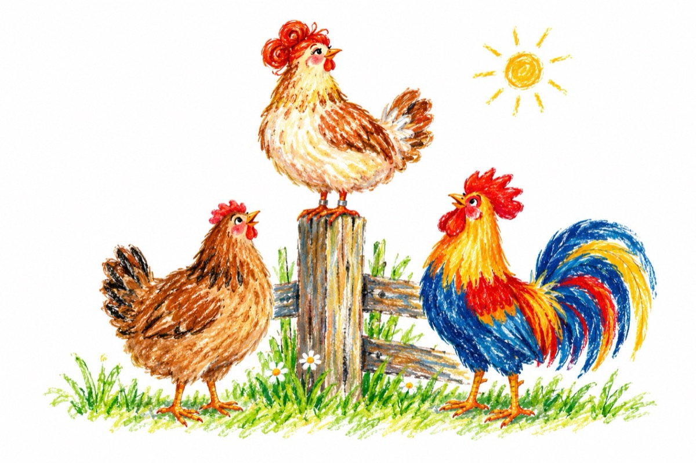

Povață
Stai de-o vreme cocoțată
Sus pe stâlpul gardului
Pintenată și moțată,
În văzul cocoșului?!...
Ai chiar și zulufi în coc
Și inel de-argint pe gheară
Și te-ai dat cu ruj pe cioc
Vrei de soață să te ceară?
Câte ouă ai făcut,
Fost-ai vreodată cloșcă
Câți pui, dragă, ai crescut
Nu vezi că ești cât o ploscă?...
Mai bine cotcodăcește
Prinde muște, scurmă râme
Și să vezi cum te-ndrăgește
De-ai să-ți faci, muncind, un nume.
Așa-i zise într-o doară
O găină-n zi de vară:
-Eu am fost exemplu-n curte,
Și-am ajuns pensionară!
Vasile Groza